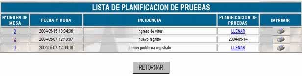
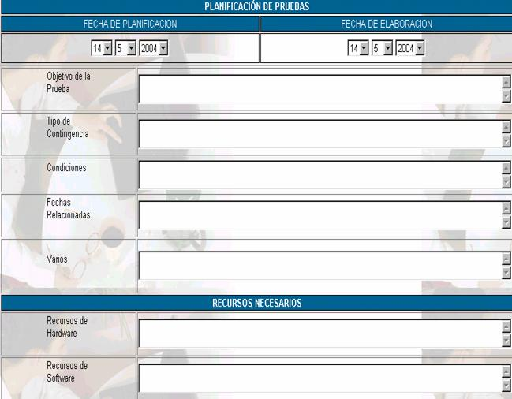
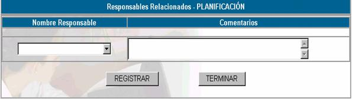

PLANIFICACIÓN
La planificación de pruebas es un ejercicio
que debe ser incluido en el POA. Durante el primer
año de implementación del Plan se planificará una prueba para todas las
aplicaciones y módulos del SFI, considerados críticos
para el negocio. A partir del segundo año se definirán pruebas semestrales.
Esta opción muestra la siguiente pantalla:

Donde
N° de orden de mesa; especifica el orden de mesa enviado por el cliente
Fecha y hora; especifica la fecha y hora en la que se realizó el
envío de la orden de mesa
Incidencia; especifica la descripción de la incidencia a la cual
se le tiene que dar solución.
Para realizar la planificación de pruebas
haga click en el vínculo LLENAR
y aparecerá la siguiente pantalla:

Fecha de Planificación; anote la fecha de elaboración del Plan que corresponda
en forma Interna a la US.
Fecha de Aprobación; se anota la fecha de aprobación.
Objetivo de la Prueba; se deberá describir el objetivo mismo de la
realización de la Prueba considerando los cambios tecnológicos, cambios de
equipos, implementación de nuevas aplicaciones, cambio de personal y otros
fines.
Tipo de Contingencia; se especificará el tipo de daño o interrupción
simulada, pudiendo ser:
Condiciones; se definirá para la contingencia definida en el
punto anterior, las condiciones del entorno físico y humano, por ejemplo robo
del servidor, ausencia del responsable de servidores y no disponibilidad de los
instaladores de sistema operativo propio.
Fechas Relacionadas; se especifica la Fecha y hora de la contingencia, el
tiempo que se tiene para restablecer los servicios con el plan de contingencias
y la Fecha en la cual se deberá comunicar al OCN para
la prueba del Plan de Continuidad, en casos donde las condiciones especifiquen
este escalamiento.
Varios; anote los aspectos no considerados en el plan.
Recursos de hardware; anote los servidores, terminales, equipos de
telecomunicación, cables de red, conectores, concentradores, routers, switch, etc.
Recursos de Software; anote los Instaladores de software base,
aplicaciones, herramientas, etc.
Recursos de Respaldo; anote los recursos de respaldo, por ejemplo: Bases de
datos.
Facilidades; instalaciones, impresoras, teléfonos, etc.
Costo aproximado; en función de las condiciones se deberá estimar el
costo de la prueba.
Presione registrar y continuar para asignar responsables
de planificación.

Nombre responsable; asigne a los responsables de la planificación
Comentarios; coloque los comentarios correspondientes a los
responsables
Imprimir; genera un reporte para impresión de la planificación
correspondiente.